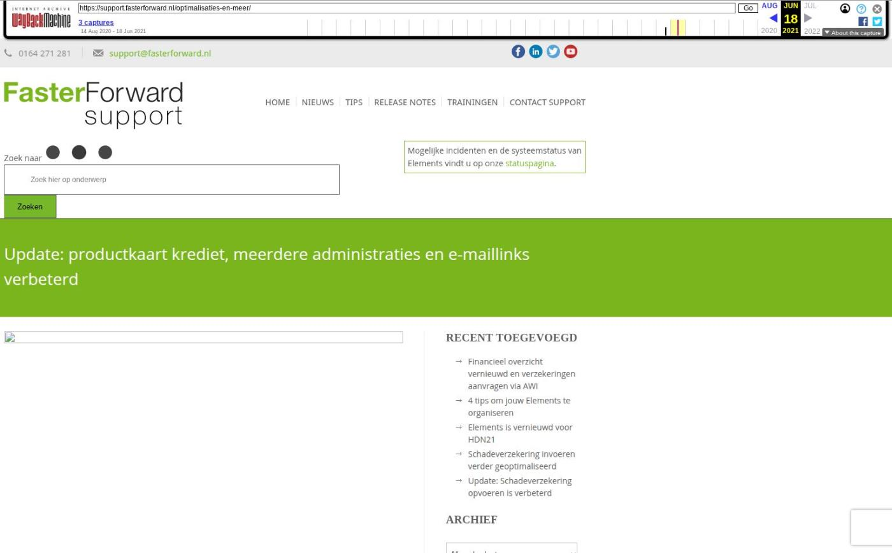

Update: productkaart krediet, meerdere administraties en e-maillinks verbeterd

Tekstinhoud
Op dinsdag 21 juli 2020 is Elements wederom geüpdatet. In deze release is onder andere de productkaart voor consumptief krediet uitgebreid en het koppelen van gegevens aan een dossier vereenvoudigd. Daarnaast zijn er een nog een reeks uitbreidingen en functionele optimalisaties.
Consumptief krediet uitbreiding
Makkelijker updaten producten en maatschappijen
Eenvoudiger koppelen aan dossier
Taxatie altijd beschikbaar
Weergave meerdere administraties
Verbetering in weergave e-mails
Ockto bestand downloaden
HDN en actuele hypotheekinformatie
API uitbreiding – Consumptief krediet
Groepstaak aanmaken vanuit snelmenu
Overige verbeteringen en uitbreidingen
Fixes
Productkaart consumptief krediet uitgebreid
De productkaart voor een consumptief krediet is uitgebreid. Bij een lease is het nu mogelijk om een object te koppelen. Hierbij kun je kiezen uit ‘auto, vrachtwagen of motor’. Daarnaast is de lease informatie inzichtelijk gemaakt en is er een veld beschikbaar om een slottermijn in te vullen.
Makkelijker producten en maatschappijen updaten
In de (product en maatschappijen) updates hebben we een aantal verbeteringen doorgevoerd. Hierdoor is het nu nog makkelijker om een maatschappij en de bijbehorende producten te installeren wanneer een update beschikbaar is. Lees hier meer informatie hierover.
Eenvoudiger koppelen aan dossier
De dossier koppel pop-up is aangepast en verbeterd. Deze wordt gebruikt vanuit de e-mail, vanuit een AFD-bericht aanvullen (Aplaza/Risk) en bij het aanvullen van een IX-bericht uit HDN.
Hierdoor kan je eenvoudig documenten aan leverancier koppelen, indien deze niet voor één specifieke polis of pakket zijn. Daarnaast wordt bij het zoeken automatisch een voorselectie getoond van de klanten die dit bepaalde product hebben.
Taxatie altijd beschikbaar
Voorheen was de taxatieknop alleen zichtbaar indien een voertuig ouder was dan 15 jaar. Deze knop wordt nu altijd getoond indien ‘ja’ aangegeven wordt bij de objectgegevens.
Weergave meerdere administraties
Indien er meerdere administraties aanwezig zijn in je Elements-omgeving (en je hier recht toe hebt), wordt de administratie bovenin het menu weergegeven. Zo heb je altijd een snelle check vóór het boeken van een factuur of je je in de juiste administratie bevindt.
Verbetering in weergave e-mails
Om te voorkomen dat er geen malafide code of verborgen scripts in e-mails zitten, gebruikt Elements een HTML purifier. Doordat sommige stijlvormen een bedreiging vormen, worden deze niet geaccepteerd in de e-mailclient van Elements, waardoor de e-mail in Elements er anders uit kan zien dan in bijvoorbeeld G-mail of Outlook.
Deze purifier was soms te streng, waardoor bepaalde zaken uit de mail gefilterd werden. Deze controle is nu beter gespecificeerd. Hierdoor zijn de uitnodiging en bijbehorende link wel zichtbaar zijn in de e-mail.
Voorbeeld
Een e-mail komt binnen met een Teams webmeeting link (uitnodiging). Deze link, achter de knop ‘Open Microsoft Teams’, werd door de purifier weggefilterd, waardoor je in Elements niet kon klikken op de link. Door de aanpassing werkt deze link nu wel.
Ockto bestand downloaden
Wanneer gebruik gemaakt wordt van de Ockto koppeling, is het nu mogelijk om het laatste Ockto ODM-bestand te downloaden. Dit bestand download je via het tabblad ‘Startpagina – Brondata’ in het dossier. Dit bestand kan bijvoorbeeld gebruikt worden in Finrust.
Indien je gebruik wilt maken van deze downloadfunctie en/of de koppeling met Ockto, stuur dan een mail naar support@fasterforward.nl
HDN en actuele hypotheekinformatie
Ondertussen zijn we ook druk bezig met het uitbreiden van de koppeling tussen HDN en Elements. Zo is er een pilot gestart die het ophalen van actuele hypotheekinformatie test middels IA en IX berichten. Lees hier meer informatie hierover.
API uitbreiding – Consumptief krediet
De productkaart m.b.t. consumptief krediet is onlangs geoptimaliseerd. Hier hebben we ook onze API op uitgebreid.
Kijk voor meer informatie op api.fasterforward.nl
Groepstaak aanmaken vanuit snelmenu
Via het snelmenu rechtsboven in een dossier, kun je nu vanuit de actie ‘taak aanmaken’ kiezen om een groepstaak aan te maken.
Overige verbeteringen en uitbreidingen
De werking van onze tags is geoptimaliseerd
Fixes
De alarmsystemenlijst is geüpdatet onder een object
Categorie: Release